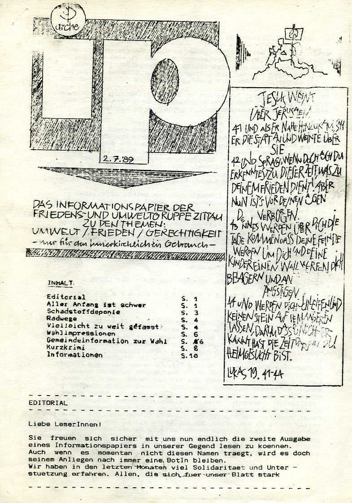

> Bisherige Editionen
Die Forschungsstelle Osteuropa bietet mit dem Katalog zur Ausstellung Samizdat einen umfassenden Überblick vor allem über den osteuropäischen Samisdat1. Nachdrucke aus dem Bestand des politischen Samisdats der DDR gibt es von den Reihen Grenzfall , "Arche Nova" , "Lausitzbotin" , sowie einzelnen Texten aus den "Umweltblättern" und anderen Reihen . Diese editierten Bestände machen weniger als ein Zehntel des Gesamtbestandes aus.
Elektronisch editiert wurden bis zum gegenwärtigen Zeitpunkt nur die Künstlerzeitschriften-Samisdat der DDR durch die Technische Universität Dresden und die Sächsische Landesbibliothek / Staats- und Universitätsbibliothek Dresden , die auch über den Gesamtbestand des Künstlerzeitschriften-Samisdats verfügt.
Elektronisch editiert wurden bis zum gegenwärtigen Zeitpunkt nur die Künstlerzeitschriften-Samisdat der DDR durch die Technische Universität Dresden und die Sächsische Landesbibliothek / Staats- und Universitätsbibliothek Dresden , die auch über den Gesamtbestand des Künstlerzeitschriften-Samisdats verfügt.
> Elektronische Edition
Mit der elektronischen Edition soll dem Umstand Rechnung getragen werden, dass die Forschungslage zur Zeit weniger an einem Mangel an Thesen, als vielmehr an der schwierigen Zugänglichkeit des Materials krankt. Der Gesamtbestand ist auf mehrere Aufbewahrungsorte verteilt und aufgrund seines Zustandes nicht zur Fernleihe geeignet.
Die Kombination von elektronischer Bild- und Textwiedergabe durch die ergänzende Volltexterfassung ermöglicht neben der visuellen Erfahrung des Originals durch die faksimileartige Wiedergabe, eine umfassende wissenschaftliche Auswertung. Die elektronische Lektüre, ergänzt durch die inhaltliche Aufbereitung (Indices, Schlagwörter, Volltextsuche und bio-bibliographische Daten) ermöglicht sowohl dem wissenschaftlich versierten Benutzer als auch dem interessierten Laien eine begrifflich gestützte Navigation und eine gezielte Analyse des Bestandes. Damit wird dem Desiderat einer erstmaligen systematischen Erschließung der Quellen Rechnung getragen.
Das so aufbereitete Material bietet die Basis für eine internationale und interdisziplinär angelegte wissenschaftliche Erforschung des politisch autonomen Denkens in der zweiten deutschen Diktatur. Es erlaubt die Rekonstruktion des geistigen Diskurses außerhalb der Zensur, wodurch Kommunikationswege und Vorstellungshorizonte der DDR-Opposition analysiert werden können. Damit eröffnet sich die Möglichkeit der Bearbeitung unterschiedlichster wissenschaftlicher Fragestellungen nicht nur durch Historiker und Politologen, sondern auch durch Kultur- und Kommunikationswissenschaftler oder Ethnologen.
Da sich der politische Samisdat keineswegs auf die DDR beschränkte, sondern vor allem in anderen sozialistischen Staaten Mittel- und Osteuropas praktiziert wurde, stellt die Edition des deutschen politischen Samisdat gleichzeitig eine günstige Grundlage für vergleichende Untersuchungen dar. Des weiteren ermöglicht die systematische Auswertung der Quellen unter den Gesichtspunkten der Entstehung, Inhalte und Arbeitsweisen politisch alternativer Gruppen in der DDR, diese in den Kontext der Forschung zu den Neuen Sozialen Bewegungen im Westen zu stellen.
Nicht zuletzt bietet sich die Edition als Quellengrundlage für die politische Bildungsarbeit zur Aufarbeitung der SED-Diktatur an - ein Punkt, den die Unabhängigen Archive als eine ihrer Hauptaufgaben ansehen.
Dr. Helmut Mottel
Thomas Pilz
Die Kombination von elektronischer Bild- und Textwiedergabe durch die ergänzende Volltexterfassung ermöglicht neben der visuellen Erfahrung des Originals durch die faksimileartige Wiedergabe, eine umfassende wissenschaftliche Auswertung. Die elektronische Lektüre, ergänzt durch die inhaltliche Aufbereitung (Indices, Schlagwörter, Volltextsuche und bio-bibliographische Daten) ermöglicht sowohl dem wissenschaftlich versierten Benutzer als auch dem interessierten Laien eine begrifflich gestützte Navigation und eine gezielte Analyse des Bestandes. Damit wird dem Desiderat einer erstmaligen systematischen Erschließung der Quellen Rechnung getragen.
Das so aufbereitete Material bietet die Basis für eine internationale und interdisziplinär angelegte wissenschaftliche Erforschung des politisch autonomen Denkens in der zweiten deutschen Diktatur. Es erlaubt die Rekonstruktion des geistigen Diskurses außerhalb der Zensur, wodurch Kommunikationswege und Vorstellungshorizonte der DDR-Opposition analysiert werden können. Damit eröffnet sich die Möglichkeit der Bearbeitung unterschiedlichster wissenschaftlicher Fragestellungen nicht nur durch Historiker und Politologen, sondern auch durch Kultur- und Kommunikationswissenschaftler oder Ethnologen.
Da sich der politische Samisdat keineswegs auf die DDR beschränkte, sondern vor allem in anderen sozialistischen Staaten Mittel- und Osteuropas praktiziert wurde, stellt die Edition des deutschen politischen Samisdat gleichzeitig eine günstige Grundlage für vergleichende Untersuchungen dar. Des weiteren ermöglicht die systematische Auswertung der Quellen unter den Gesichtspunkten der Entstehung, Inhalte und Arbeitsweisen politisch alternativer Gruppen in der DDR, diese in den Kontext der Forschung zu den Neuen Sozialen Bewegungen im Westen zu stellen.
Nicht zuletzt bietet sich die Edition als Quellengrundlage für die politische Bildungsarbeit zur Aufarbeitung der SED-Diktatur an - ein Punkt, den die Unabhängigen Archive als eine ihrer Hauptaufgaben ansehen.
Dr. Helmut Mottel
Thomas Pilz
1 Dieser Katalog erschien anläßlich der Ausstellung "Samizdat, Alternative Kultur in Zentral- und Osteuropa - die 60er bis 80er Jahre" vom 10.09. - 29.10.2000 in der Akademie der Künste Berlin. Forschungsstelle Osteuropa, Eichwede, Wolfgang (Konzept. u. Leitg.); Bock, Ivo (Red.): Samizdat. Alternative Kultur in Zentral- und Osteuropa. Die 60er bis 80er Jahre, Berlin 2000.
2 Hirsch, Ralf; Kopelew, Lew (Hg.): Initiative Frieden und Menschenrechte. Grenzfall. Vollständiger Nachdruck aller in der DDR erschienenen Ausgaben (1986/87). Erstes unabhängiges Periodikum. Berlin (West), Selbstverlag, 1989.
Jordan, Carlo; Kloth, Hans Michael: Arche Nova. Opposition in der DDR. Das "Grün-ökologische Netzwerk Arche" 1988-90. Mit den Texten der ARCHE NOVA, Berlin 1995
Umweltbibliothek Großhennersdorf, Der Sächsische Landesbeauftragte für die Unterlagen des Staatssicherheitsdienstes der ehemaligen DDR (Hrsg.): Lausitzbotin. Das Jahr 1989 in der sächsischen Provinz im Spiegel einer Zittauer Oppositionszeitschrift. Mit einer Studie von Arnaud Liszka, Bautzen 1999
Rüddenklau, Wolfgang: Störenfried. DDR-Opposition 1986-1989. Mit Texten aus den "Umweltblättern", Berlin 1992
Kowalczuk, Ilko-Sascha (Hg.): Freiheit und Öffentlichkeit. Politischer Samisdat in der DDR 1985-1989. Berlin: Robert-Havemann-Gesellschaft e.V., 2002.
DFG-Projekt Künstlerzeitschriften der DDR (als elektronische Edition) der Technischen Universität Dresden, Lehrstuhl Neuere Deutsche Literaturwissenschaft und der Sächsischen Landesbibliothek/ Staats- und Universitätsbibliothek Dresden, http://141.30.171.13/tud/templates/index.html
2 Hirsch, Ralf; Kopelew, Lew (Hg.): Initiative Frieden und Menschenrechte. Grenzfall. Vollständiger Nachdruck aller in der DDR erschienenen Ausgaben (1986/87). Erstes unabhängiges Periodikum. Berlin (West), Selbstverlag, 1989.
Jordan, Carlo; Kloth, Hans Michael: Arche Nova. Opposition in der DDR. Das "Grün-ökologische Netzwerk Arche" 1988-90. Mit den Texten der ARCHE NOVA, Berlin 1995
Umweltbibliothek Großhennersdorf, Der Sächsische Landesbeauftragte für die Unterlagen des Staatssicherheitsdienstes der ehemaligen DDR (Hrsg.): Lausitzbotin. Das Jahr 1989 in der sächsischen Provinz im Spiegel einer Zittauer Oppositionszeitschrift. Mit einer Studie von Arnaud Liszka, Bautzen 1999
Rüddenklau, Wolfgang: Störenfried. DDR-Opposition 1986-1989. Mit Texten aus den "Umweltblättern", Berlin 1992
Kowalczuk, Ilko-Sascha (Hg.): Freiheit und Öffentlichkeit. Politischer Samisdat in der DDR 1985-1989. Berlin: Robert-Havemann-Gesellschaft e.V., 2002.
DFG-Projekt Künstlerzeitschriften der DDR (als elektronische Edition) der Technischen Universität Dresden, Lehrstuhl Neuere Deutsche Literaturwissenschaft und der Sächsischen Landesbibliothek/ Staats- und Universitätsbibliothek Dresden, http://141.30.171.13/tud/templates/index.html

IP (2. Juli 1989)